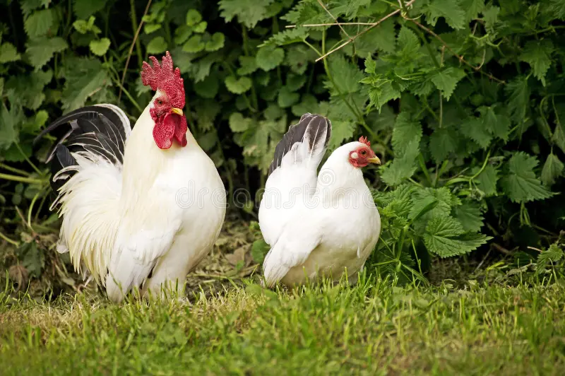

🌎 País de origen
Inglaterra
📖 Historia
Es la misma base genética de la Sebright plateada, desarrollada en Inglaterra por Sir John Sebright. Su diferencia es el color dorado con bordes negros, muy apreciado en exposiciones avícolas.
✨ Datos curiosos
- Su plumaje dorado con borde negro es muy difícil de mantener puro en crianza.
- Es una gallina completamente ornamental.
📸 Ejemplares de nuestra granja


⭐ Calificación de visitantes
⭐⭐⭐⭐⭐
Esta especie es una de las favoritas de los visitantes de La Granja de Gregori.